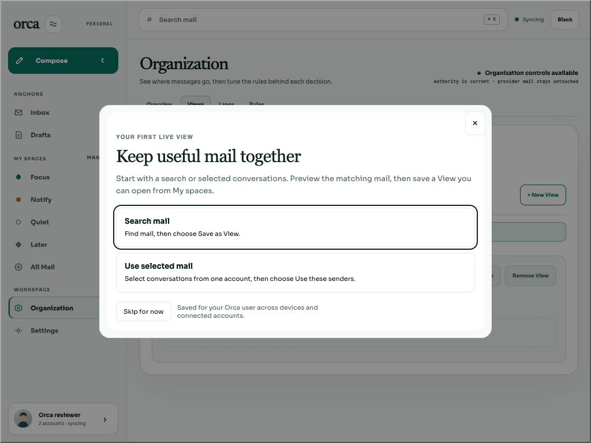
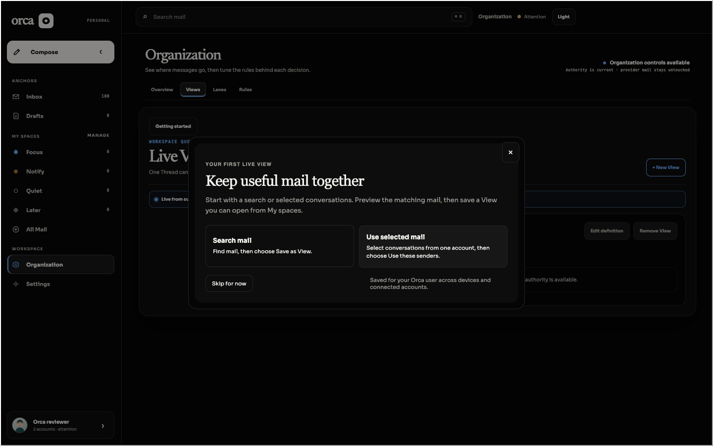
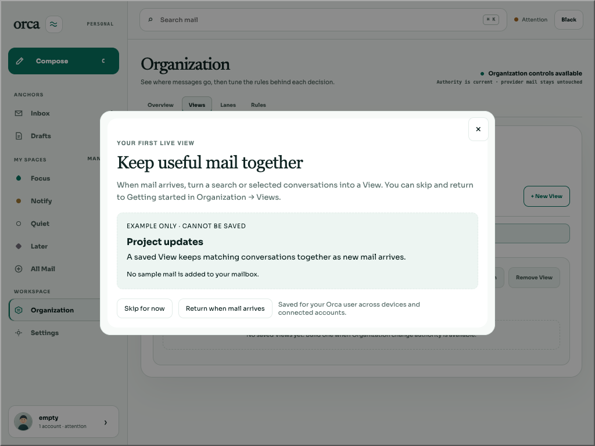
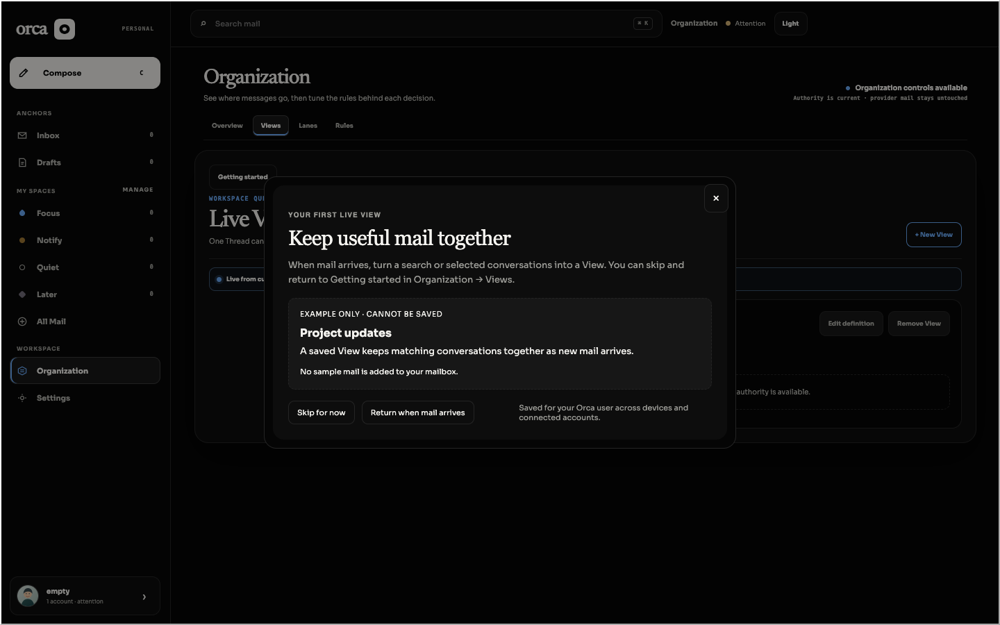

BRE-387 F02. Both start-button helpers and the no-mail sample’s caption, description and small print now use the established --orca-ink foreground. They previously kept #5f7470 muted text on #edf5f2, giving 4.49048326062504 contrast for normal-sized text, below the unrounded 4.5 minimum.
The runtime change is confined to apps/web/src/first-view-guidance.css: one helper-span color and a later local override for .first-view-sample figcaption, p and small. Global tokens, footer, eyebrow, surfaces, spacing, focus rules and tutorial behavior are unchanged. No runtime JavaScript changed.
PASS: 32 captures, 72 text measurements, minimum contrast 14.620005100049028. Helper matrix result · Sample matrix result · Helper log · Sample log.
| Final case | Helper default / focus | Helper hover / held active | Sample text |
|---|---|---|---|
| Light 1024×768 | 16.2067 | 14.6200 | 14.6200 |
| Black 1024×768 | 17.5043 | 16.1464 | 16.1464 |
| Light 1440×900 | 16.2067 | 14.6200 | 14.6200 |
| Black 1440×900 | 17.5043 | 16.1464 | 16.1464 |
Displayed table values are rounded only for reading; assertions compare unrounded values. Every helper case exercises default plus both buttons’ hover, held active and real Tab focus. All eight targeted focus captures have visible outlines; all eight pressed captures establish :active. The checker asserts requested theme/viewport, visible geometry and real center hit targets, and waits for the app-owned theme transition to finish. Current starts have no disabled or persistent pressed state; the no-mail branch renders the sample instead.




bun scripts/bre-387-review.ts --built after building. Authenticate its scratch reviewer and open Organization → Views. Use only one coordinated browser/server pair./opt/homebrew/bin/agent-browser skills get core --full, then run bun apps/web/scripts/check-guidance-contrast.ts --session NAME --matrix --output DIR --keep-session./v1/review/login?user=empty, open Organization → Views, and add --sample. Final fixture receipt confirms zero mail. Do not reset an evidence database.--behavior on a mail fixture. Close the named browser and scratch server when finished.The checker starts no server, seeds no data and injects no product CSS or DOM test attributes. It reads browser-computed foregrounds and composites solid ancestor backgrounds. Unsupported opacity, filters or background images fail closed. These checks establish this bounded contrast defect; they do not certify whole-page accessibility.
Final source/checker/asset hash receipt binds the actual final runtime to baseline e9caad71059ba0879c1e92b3571836a368f4bff2 plus this local CSS change and the successful final root build. Every final capture references index-B72Z04Ct.css and index-amMOSRSH.js. JavaScript bytes match the earlier runtime; Vite renamed the entry while linking the updated CSS.
Raw inherited server receipt retains historical F01 runtime/receipt labels. Those labels are superseded by final-build.json and the immutable commit containing this guide; its actual served asset hashes agree. No harness rewrite or extra build was used to alter metadata. Final cleanup receipt records browser close exit 0, server SIGINT exit 0, scratch removal and released ports; final built assets remain available for coordinated reuse.
bun run build: all workspaces exit 0, including web TypeScript check. Existing large-chunk warning and raw logger whitespace retained verbatim. Raw log.bun test apps/web/src/first-view-guidance.test.tsx: 12 pass, 0 fail, 68 expectations. Raw log.Final matrices exercise real Tab and Escape/trigger focus restoration. Separate keyboard activation smoke passed on prior helper-only assets: Enter opened Search with input focus; Escape returned to Organization/Getting started; Space opened All Mail in empty selection mode; Skip/help Escape restored the trigger. Its five JSON/snapshot/screenshot triplets remain under behavior-black-1440/, with terminal log. They are prior-runtime evidence, not a rerun on final sample-selector assets. Final focused tests cover unchanged guidance actions/state handling.
This clears only the bounded guidance text contrast change once exact-commit review/gates pass. Wider BRE-387 state/loading coverage, native macOS Undo and human usability requirements remain separate.